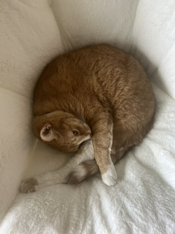

<!DOCTYPE html>
<html>
<head><meta name="generator" content="Hexo 3.9.0">
  <meta charset="utf-8">
  
  <title>People - Wu Group</title>
  <meta name="viewport" content="width=device-width, initial-scale=1, maximum-scale=1">
  <meta name="description" content="Actively looking for motivated graduate students and postdoctoral researchers. Please contact Dien via dien.wu at colostate.edu  PI: Dien Wu, CV     As an atmospheric scientist, Dien has always been i">
<meta property="og:type" content="website">
<meta property="og:title" content="People">
<meta property="og:url" content="http://dienwu.me/people/index.html">
<meta property="og:site_name" content="Wu Group">
<meta property="og:description" content="Actively looking for motivated graduate students and postdoctoral researchers. Please contact Dien via dien.wu at colostate.edu  PI: Dien Wu, CV     As an atmospheric scientist, Dien has always been i">
<meta property="og:locale" content="en">
<meta property="og:image" content="http://dienwu.me/image/jpl.png">
<meta property="og:image" content="http://dienwu.me/image/schemer.jpeg">
<meta property="og:updated_time" content="2025-04-05T23:41:33.425Z">
<meta name="twitter:card" content="summary">
<meta name="twitter:title" content="People">
<meta name="twitter:description" content="Actively looking for motivated graduate students and postdoctoral researchers. Please contact Dien via dien.wu at colostate.edu  PI: Dien Wu, CV     As an atmospheric scientist, Dien has always been i">
<meta name="twitter:image" content="http://dienwu.me/image/jpl.png">
  
  
  <link href="/webfonts/ptserif/main.css" rel="stylesheet" type="text/css">
  <link href="/webfonts/source-code-pro/main.css" rel="stylesheet" type="text/css">
  <link rel="stylesheet" href="http://cdnjs.cloudflare.com/ajax/libs/highlight.js/9.9.0/styles/monokai.min.css">
  <link rel="stylesheet" href="/css/style.css">
  
<!-- Google tag (gtag.js) -->
<script async src="https://www.googletagmanager.com/gtag/js?id=G-1XWGSJVW0K"></script>
<script>
  window.dataLayer = window.dataLayer || [];
  function gtag(){dataLayer.push(arguments);}
  gtag('js', new Date());
  gtag('config', 'G-1XWGSJVW0K', { 'debug_mode':true });
</script>

</head>
</html>
<body>
  <div id="container">
    <header id="header">
  <div id="header-outer" class="outer">
    <div id="header-inner" class="inner">
      <a id="main-nav-toggle" class="nav-icon" href="javascript:;"></a>
      <a id="logo" class="logo logo-text" href="/">Group</a>
      <nav id="main-nav">
        
          <a class="main-nav-link" href="/">Home</a>
        
          <a class="main-nav-link" href="/people">People</a>
        
          <a class="main-nav-link" href="/research">Research</a>
        
          <a class="main-nav-link" href="/travel">Travel</a>
        
      </nav>
      <nav id="sub-nav">
        <div id="search-form-wrap">
          <form action="//google.com/search" method="get" accept-charset="UTF-8" class="search-form"><input type="search" name="q" class="search-form-input" placeholder="Search"><button type="submit" class="search-form-submit">&#xF002;</button><input type="hidden" name="sitesearch" value="http://dienwu.me"></form>
        </div>
      </nav>
    </div>
  </div>
</header>
    <section id="main" class="outer"><article id="page-undefined" class="article article-type-page" itemscope itemprop="blogPost">
  <div class="article-inner">
    
    
      <header class="article-header">
        
  
    <h1 class="article-title" itemprop="name">
      People
    </h1>
  

      </header>
    
    <div class="article-meta">
      
        <a href="/people/index.html" class="article-date">
  <time datetime="2025-04-05T23:41:40.635Z" itemprop="datePublished">2025-04-05</time>
</a>
      
      
      
    </div>
    <div class="article-entry" itemprop="articleBody">
      
        <p>Actively looking for motivated graduate students and postdoctoral researchers.<br>
Please contact Dien via dien.wu at <a href="http://colostate.edu" target="_blank" rel="noopener">colostate.edu</a></p>
<h3 id="pi-dien-wu-cv"><a class="markdownIt-Anchor" href="#pi-dien-wu-cv"></a> PI: Dien Wu, <a href="/files/Wu_CV_vfinal.pdf">CV</a></h3>
<div style="display: flex; gap: 30px;">
  <div style="flex: 7;">
<p>As an atmospheric scientist, Dien has always been intrigued by complex land-atmosphere interactions and how they are changing in the face of anthropogenic forcing. She enjoys developing <a href="image/research/Fig_multi.png">atmospheric (chemical) transport models, inverse techniques</a> (top-down perspective), and <a href="image/research/Fig_smurf_flow.png">empirical/machine-learning models</a> (bottom-up perspective) to help interpret varied remotely sensed products of atmospheric compositions and land surface properties. She has been a member of NASA’s Orbiting Carbon Observatory (<a href="https://ocov2.jpl.nasa.gov/" target="_blank" rel="noopener">OCO-2</a> &amp; <a href="https://ocov3.jpl.nasa.gov/" target="_blank" rel="noopener">OCO-3</a>) Science Team since 2016. 🛰️ She loves hiking and playing racquetball. You can likely find her in the <a href="travel">woods 🌲</a> or other platforms of <a href="https://twitter.com/dien_wu" target="_blank" rel="noopener">X</a>, <a href="linkedin.com/in/dienwu">Linkedin</a>, <a href="https://scholar.google.com/citations?user=BoQlV6gAAAAJ&amp;hl=en&amp;oi=ao" target="_blank" rel="noopener">GScholar</a>, and <a href="https://github.com/wde0924" target="_blank" rel="noopener">GitHub</a>.</p>
  </div>
  <div style="flex: 3;">

  </div>
</div>
<h3 id="current-group-members"><a class="markdownIt-Anchor" href="#current-group-members"></a> Current Group Members</h3>
<p>Awating…</p>
<h3 id="group-mascot-dr-schemer"><a class="markdownIt-Anchor" href="#group-mascot-dr-schemer"></a> Group Mascot: Dr. Schemer 🐱</h3>
<div style="display: flex; gap: 30px;">
  <div style="flex: 7;">
As an amateur atmospheric scientist and a professional gymnast, Schemer practices "toy bird" chasing and has a keen research interest in "food security". 
  </div>
  <div style="flex: 3;">

  </div>
</div>

      
    </div>
    
    
      <footer class="article-footer">
        
      </footer>
    
  </div>
  
    
  
</article>


</section>
    <footer id="footer">
  
  <div class="outer">
    <div id="footer-info" class="inner">
      &copy; 2025 Dien Wu&nbsp;
      Powered by <a href="http://hexo.io/" target="_blank">Hexo</a>, theme by <a href="http://github.com/ppoffice">PPOffice</a>
    </div>
  </div>
</footer>
    

<script src="/js/jquery.min.js"></script>
<script src="http://masonry.desandro.com/masonry.pkgd.js"></script>
<script src="/js/highlight.pack.js"></script> 
<!--
<script src="/js/highlight.js"></script>
<script src="/js/scheme.js"></script>
-->
<script type="text/javascript">
  hljs.initHighlightingOnLoad();
</script>
<script type="text/x-mathjax-config">
MathJax.Hub.Config({
  tex2jax: {inlineMath: [['$','$'], ['\\(','\\)']]}
});
</script>
<script type="text/javascript"
   src="http://cdn.mathjax.org/mathjax/latest/MathJax.js?config=TeX-AMS-MML_HTMLorMML">
</script>


  <link rel="stylesheet" href="/fancybox/jquery.fancybox.css">
  <script src="/fancybox/jquery.fancybox.pack.js"></script>


<script src="/js/script.js"></script>

  </div>
</body>
</html>